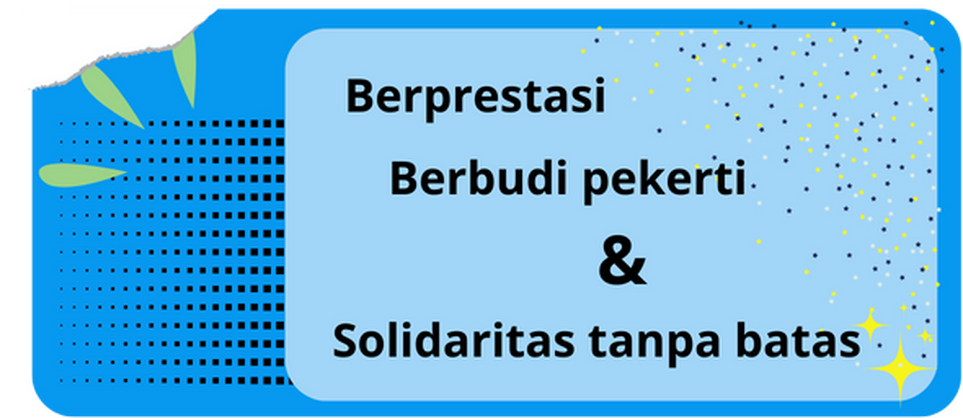

Main Menu
Prakata Kami
Puji syukur atas rahmat tuhan YME yang telah di berikan kepada kita semua, Dengan ini kami anggota kelas 8B membuat situs ini untuk memberikan informasi seputar Benevolent. Benevolent adalah salah satu kelas di SMP Negeri 1 Godean, yang saat ini di Pimpin oleh Syahda Sita Saputri dan wakilnya Hanifa Naura Putri, yang dimana Kata Benevolent sendiri memiliki arti Penuh dengan kebajikan, dengan julukan itu kami berharap kelas ini menjadi sebuah kelas yang penuh akan kebajikan serta dapat berprestasi, berbudi pekerti, dan memiliki solidaritas yang baik.
Nama Nama Siswa
Perempuan
Intan Afifah Nabila Syifa Zema Cathrine Diah Embun Galuh Naura Janiba Kaira Rindu Nurul Ratir Khusna Zahra Sita
Selamat belajar dan berkreasi!
Wali Kelas
- Ibu Fresta Svara Kusrian, S.Pd
Pengurus Kelas
Ketua Kelas : Syahda Sita Saputri Wakil Ketua Kelas : Hanifa Naura Putri
Bendahara
1. Radhitya Septian Waradana
2. Embun Kinanthi Alsa Maheswari
Sekretaris
1. Affan Eka Pradybta
2.Kamaniya Rindu Azkadina
MPK
1. Raydarkahyan Nusantara Alvaro Widhiarto
2. Asyifa Najwa Fadhila